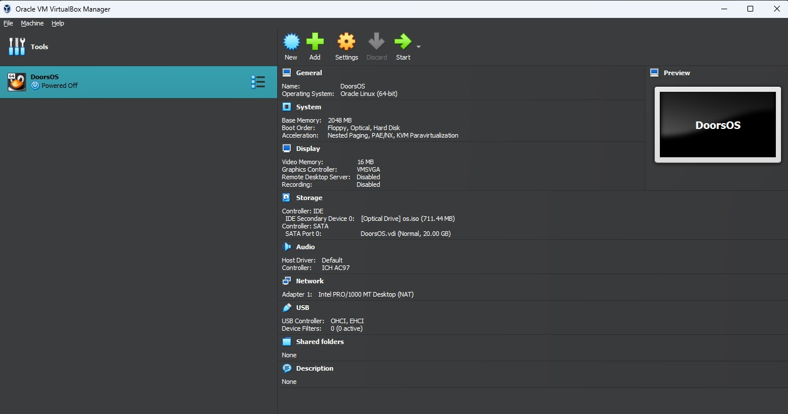

Where we specialize in the development and distribution of cutting-edge operating systems. Our passion lies in crafting software solutions that power devices, streamline workflows, and enrich user experiences across a wide array of platforms.
At XPDevs, we pride ourselves on our innovative approach to operating system design, leveraging the latest technologies and methodologies to create robust, reliable, and user-friendly software. With a dedicated team of developers, engineers, and designers, we work tirelessly to push the boundaries of what's possible in the world of computing.
Our commitment to excellence extends beyond just creating exceptional software. We are also dedicated to providing top-notch support and resources to our users, ensuring that they have everything they need to succeed in their endeavors. Whether you're a seasoned professional or just starting out, we're here to help you navigate the ever-evolving landscape of technology.
Join us on our journey as we continue to innovate, inspire, and transform the way the world interacts with technology. Together, we can shape the future of computing and empower individuals and businesses alike to achieve their full potential.
Thank you for choosing XPDevs. Let's build something amazing together.
Be the first to see what Software we are developing
We can be contacted through our customer support email: xpdevscstmspport@gmail.com
Ladies and gentlemen, Today, I am excited to introduce you to a revolutionary operating system that is designed to meet the needs of modern, on-the-go users. Imagine carrying a powerful, fully functional operating system in your pocket – an OS that doesn't just run, but thrives on minimal storage. Our operating system can do just that, operating smoothly on as little as 16 GB of storage. This incredible feature makes our OS perfect for a wide range of users. Whether you're working with low-storage devices, older hardware, or simply need a portable solution, our OS is the ideal choice. Let's explore why this is a game-changer. Firstly, portability. With our operating system, you can carry your digital world on a small USB drive. Plug it into any compatible device and you're ready to go. There's no need for complex installations or extensive setups. Just plug in and play, and your personalized computing environment is at your fingertips. The only setup required is creating your password – it's that simple. Next, efficiency. We've optimized our OS to ensure it uses resources wisely. Even on a 16 GB USB drive, you'll experience fast, reliable performance. Whether you're browsing the web, working on documents, or managing files, our OS handles it all with ease. We've designed it to be lean and mean, without compromising on the features and functionalities you need. Versatility is another cornerstone of our OS. It's compatible with both modern and legacy devices, making it an excellent choice for reviving older hardware. Don't let storage limitations hold you back. Our OS breathes new life into your devices, allowing you to make the most out of what you have. User-friendliness is at the heart of our design. We believe that technology should be accessible to everyone. Our intuitive interface ensures that you can navigate and utilize all features effortlessly. From tech enthusiasts to everyday users, our OS is designed to be easy and enjoyable to use. With the minimal setup of just creating your password, you're ready to start using it immediately. Security and reliability are non-negotiable for us. Running an OS from a USB drive is not only convenient but also secure. Our OS is built with robust security features to protect your data and ensure stable operation, no matter where you are or what you're doing. In conclusion, our operating system represents a significant leap forward in computing flexibility and efficiency. It's a small, powerful, and versatile solution that fits right in your pocket. Whether you're a professional on the go, a student with limited resources, or someone looking to extend the life of their older devices, our OS is designed to meet your needs. Thank you for your time, and I invite you to experience the future of portable computing with our OS. Small storage, big performance – discover the difference today!